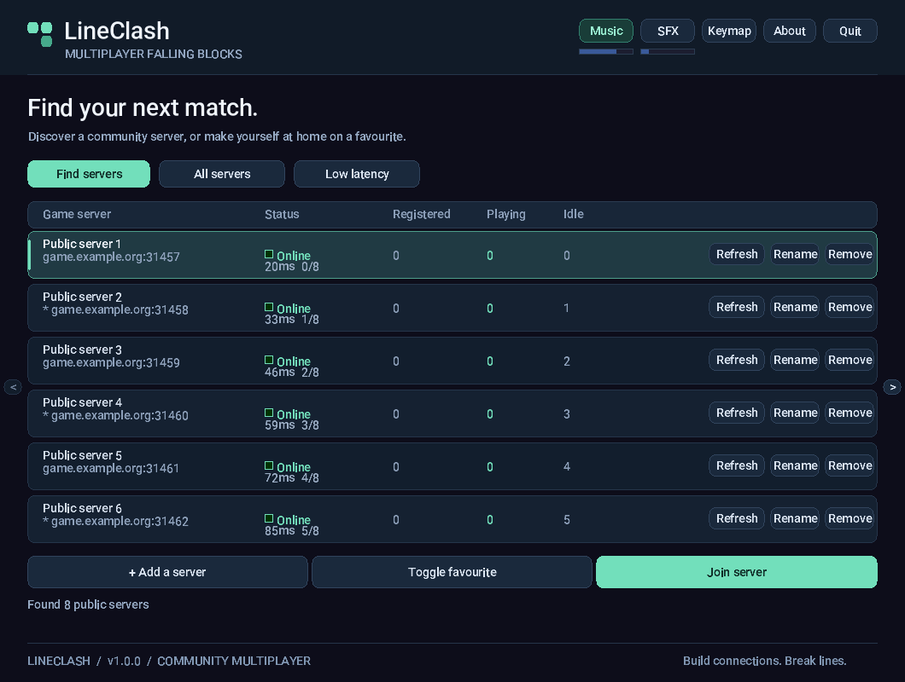
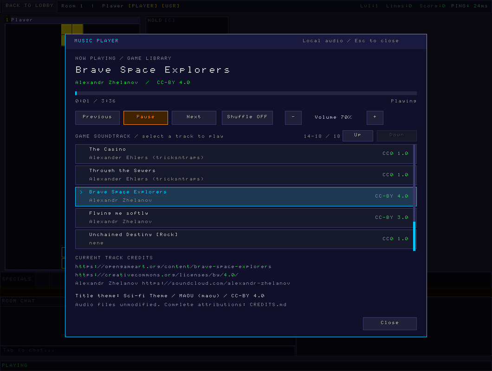

Start the server, then open ./clients/gui/lineclash or run ./clients/cli/lineclash-cli localhost. In the GUI, add/select the host and port, enter a nickname and password, and connect. A new nickname creates an account unless registration is disabled. Reuse the same credentials to log in later. Choose a room from the lobby list.
The first player in a room becomes host. Ready players can start a round using the room's start control; the host can manage bots and room rules. Players on the same named team cooperate. Set or clear the team in the lobby. Room and server chat are separate; the GUI exposes both and room settings through its controls. Spectators watch without playing; use the GUI room controls to spectate and arrows to change the watched player. An eliminated player can also watch opponents.
| Action | GUI | Terminal |
|---|---|---|
| Move | Left / Right (A / D aliases) | Left / Right |
| Rotate clockwise | Up (W alias) | Up |
| Rotate counterclockwise | Z | Z |
| Soft drop | Down (S alias) | Down |
| Hard drop | Space | Space |
| Hold | C or Shift | C |
| Chat | Tab | Tab |
| Ready in room | R | R |
| Start round as host | GUI start control | S in room |
| Pause | F5 | See in-game footer / room permissions |
GUI key bindings can be changed in its keymap settings. The terminal displays contextual shortcuts; in its room lobby, T edits the team, E/M/H adds an easy/medium/hard bot, X removes a bot, and Q leaves the room. Room hosts/managers can use 1–6 to change the listed room rules. During play, number keys target player slots for specials; use the displayed inventory and target indicators. Use /help in supported chat/console contexts for command help.
If a connection drops during a round, the server reserves the player's slot for reconnect_window seconds (default 15). GUI and terminal clients now retry automatically, reauthenticate, and request the same round/slot while preserving their local active piece. A countdown is shown; Esc cancels in the GUI and Q/Esc cancels in the terminal. Gameplay is frozen during recovery. Kicks and authentication failures stop retries. Reconnecting after expiry or after a server restart does not restore the active round. Saved room preferences and account statistics survive restarts.
A silent connection is treated as lost after five seconds without a reply. The grace countdown starts when the client detects the loss; the server reservation starts when it observes the old connection close. Expired slots, a changed round, account disappearance or server restart require a manual choice rather than silently starting a new game. See trust review and platform verification.
The GUI music player includes the title theme and an 18-track in-game library, including all ten cyberpunk-pack pieces. Open Music Player beside Hold/Next during an active round. The main menu plays only the title theme; leaving a round closes the player. It has track selection, seek, previous/next, pause, shuffle, volume and attribution links. About lists all music credits across pages. See soundtrack details and credits.
See discovery, ranked history, health reports, replays and music shortcuts for the latest controls, deployment changes and verification limits.
Set LINECLASH_DIRECTORY_API=https://your-host/api/ before starting the GUI, then select Find servers in the server list. Downloads run on a background worker with verified TLS, no redirects, a bounded response and timeouts. The optional website shortcut still uses LINECLASH_DIRECTORY_URL=https://your-host/directory/.
The browser supports up to 64 saved/discovered endpoints (native hostnames up to 127 bytes), All / Favourites / Recent / Open slots / Ping ≤100 ms filters, latency and recent-played sorting. Latency is an approximate TCP/banner round trip, not gameplay latency. Unknown/offline latency sorts last. Open-slot filtering uses the operator-announced total capacity; absent capacity is unknown, not zero free slots. The Favourite / unfavourite button persists the chosen endpoint. Recent entries are recorded only after successful authentication.
Public discovery never supplies or sends account credentials. Selecting a new endpoint opens the connection form; saved credentials are reused only for that exact host/port and nickname. Discovery merges matching endpoints without replacing local names, passwords or favourites. Unused discoveries are transient. First-time users must enter credentials explicitly.
For isolated local tests only, LINECLASH_DIRECTORY_ALLOW_LOCAL=1 allows discovery from loopback HTTP. Public HTTP is always rejected. Native discovery adds a libcurl dependency on macOS/Linux; Windows uses built-in WinHTTP. On macOS the system libcurl is used. Linux build dependencies are libcurl4-openssl-dev (Debian/Ubuntu), libcurl-devel (openSUSE/Fedora); corresponding runtimes must be available in installed clients.
New matches have a ranked candidate flag only when there are at least two humans and no active bots at round start. Manually stopped rounds are always casual. Solo/bot rounds and legacy records are casual, retained in history but excluded from the ranked public leaderboard. Ranked here means this eligibility rule, not verified tournament rules or a cheat-free certification. Natural draws remain ranked matches with no awarded win.
Every human participant has a linked game ID, per-match lines/specials/blocks, placement when observed, and win status. Zero placement means unknown (for example, a disconnected player), not a fabricated finishing position. Match completion finalizes disconnected players too. Public player histories are scoped by server and nickname; matching names on different servers are not merged. The website exposes recent 50-match profiles, match details, UTC duration and ranked/casual filters.
New matches store UTC epoch seconds as well as UTC text timestamps. Existing historical timestamps are preserved and labelled legacy; their timezone and ranking are not guessed. Run php public-web/bin/manage.php migrate on each website upgrade before enabling the updated registrar. Migrations are additive and repeatable.
A persistent random generation ID now belongs to the gameplay database, in service_metadata, rather than only the registrar state. Restarting or restoring the same game database preserves identity. Resetting delivery state safely replays the same remote IDs without duplicating games. Replacing the game database produces a new generation automatically, so reusing the delivery state cannot silently suppress games with reused numeric IDs. The first upgrade can adopt the old delivery identity to preserve existing remote history. Preserve both files in backups, and never run two registrars against the same server simultaneously.
The supervisor atomically writes a private STATE.health.json file (override with --health PATH). It reports the last successful announcement, failure count, pending batch count and actionable error guidance without credentials or payloads. pending_is_lower_bound marks the count as a lower bound rather than an exact queue length; it is not an exact queue length. The last success survives restarts.
python3 scripts/server_directory.py --show-health /var/lib/lineclashd/directory.sqlite3.health.json
403 errors point to server ID/token provisioning; 503 errors point to website/database configuration; connection/TLS failures point to URL, certificates or connectivity. All retry without blocking gameplay. The supervisor notices unexpected child exit promptly rather than waiting an entire heartbeat interval.
Dedicated servers buffer public gameplay broadcasts in memory, then save the trace at round completion in the same SQLite transaction as final results. Authentication and chat are excluded by an allowlist. Each room is bounded to 2,048 events (roughly 1 MiB); a trace that reaches the limit is explicitly marked partial. There are no replay SQLite writes on every game frame. A crash can lose the current unfinished trace.
The registrar compresses traces, includes their SHA-256, and uploads them with the match. Announcements are bounded to 2 MiB and selected into smaller batches; the website validates decompression limits, checksums, ordering and event types before committing. Retries cannot double-count results, player rows or replays. Legacy games have no trace and cannot gain a historical replay retroactively.
Open Details / replay from a recent match. The viewer verifies the original trace checksum before playback, supports play/pause, seeking, playback speed, board snapshots for all eight slots and JSON downloads. Times between snapshots show the last recorded board; this is not a frame-perfect video. Player names link to their server-scoped history.
Download and inspect a trace independently:
python3 scripts/verify_replay.py lineclash-replay.json
The verifier checks SHA-256, event sequence/times, allowed messages and board dimensions; it reports partial traces. Checksums detect altered/corrupted bytes, but a trusted server operator can fabricate a trace. There is no deterministic resimulation or authoritative anti-cheat proof in this format.
During a round, F8 / F9 / F10 select previous track, pause/resume and next track without opening the player. These shortcuts are reserved while in a round, including watching after elimination. Menus remain title-only. Important enabled sound alerts temporarily reduce music to 35% and smoothly restore it without changing the saved music volume. Move/rotate sounds do not duck music.
make verify covers native builds, offline release tools, protocol/auth/network tests, music/UI, and a real HTTP fixture for asynchronous native discovery. Added multiplayer cases cover host departure, concurrent disconnects, natural wins, stopped rounds, participant completion, replay privacy, and persistent identity across server restarts. With a disposable MariaDB configuration in LINECLASH_WEB_CONFIG, make web-test covers migrations, ranked filtering, player history, replay integrity, registration and shutdown. Windows runtime and installer checks still require a Windows host; cross-compilation alone is not runtime verification.

Native builds support macOS, Linux and Windows x64. Windows builds include the GUI, dedicated server and administration tool; the terminal client and POSIX process harness are for macOS/Linux. See Windows build and packaging. Windows runtime validation requires a Windows host; cross-linking is separate evidence. Amiga branches remain unvalidated.
Install a C compiler, make, SQLite development headers/library, SDL2 for GUI, and Python 3 for HTTP tests. From the project root:
make -j4
make -C tests unit
make -C tests integration
# Or build first, then run both suites:
./scripts/run-tests.sh --all
Unit tests cover field/piece basics, socket fragmentation/coalescing, oversized input, output backpressure and descriptor reuse, failed-login logging and latest-game persistence. Integration tests exercise registration, login challenge, lobby selection, joining, player visibility, valid HTTP JSON, escaping, incomplete/slow clients, request expiry and API disablement. Tests start local servers on temporary ports using unique databases; local TCP access is required. The C harness requires POSIX processes/sockets. Port collisions are possible on a busy shared host; retry after checking startup diagnostics.
For memory checks, use the sanitizer-capable system compiler:
make -C tests clean
make -C tests unit CFLAGS='-Wall -Wextra -g -O1 -I../shared/include -fsanitize=address,undefined -fno-omit-frame-pointer'
version.mk is the release-version source. get-version.sh supplies version, numeric build metadata and UTC date to Makefiles and scripts. Build numbers default to major*10000 + minor*100 + patch; set the environment variable BUILD_NUMBER to a numeric CI build identifier to distinguish builds of one release. SOURCE_DATE_EPOCH fixes the generated date for reproducibility. Packaging and test scripts do not increment counters or rewrite build headers. CI builds server artifacts on each packaging platform; integration jobs build a native server and the Linux images include SQLite headers and Python 3. Header generation uses atomic replacement and only changes content when metadata changes. Both clean and parallel builds are supported; header dependencies trigger recompilation.
make VERSION=1.0.1
BUILD_NUMBER=1234 make
sh get-version.sh
Build all binaries on the destination platform first. Native scripts:
./scripts/build-server.sh
./scripts/build-client.sh
./scripts/build-cli.sh
# macOS, unsigned/ad-hoc signed local DMG:
./scripts/package-macos.sh
# Optional macOS developer identity:
./scripts/package-macos.sh --sign 'Developer ID Application: Name (TEAM)'
# Linux x86_64, install relevant rpmbuild/dpkg-deb tools first:
./scripts/package-linux.sh --deb
./scripts/package-linux.sh --rpm
./scripts/package-linux.sh --opensuse-leap15
Artifacts go into dist/. Linux packaging currently assumes x86_64. Inspect package contents and test installation on clean target systems before distributing. Code signing does not imply Apple notarization. Optional music assets and their licensing are described in music/README.md. Include LICENSE.md and corresponding source when distributing under the project's license.
public-web/index.php is the promotional PHP page, separate from the game and JSON API. For a local preview with PHP installed:
php -S 127.0.0.1:8080 -t public-web
For public hosting, configure a production PHP-capable web server with public-web/ as its document root. Do not serve the project root or database directory. Review the page's release links/version before publishing. Fonts are requested from Google Fonts; the page is not an HTTP API proxy.
Use make verify for the full native gate, including client reconnect and offline release-tool checks. See platform verification, trust review, and release workflow.
Music-specific checks: make -C tests music music-ui. The UI test uses a dummy display/audio device and writes previews in the system temporary directory. make -C tests decoder-sanitize checks all original audio decoders using AddressSanitizer/UndefinedBehaviorSanitizer where supported, without loading the native SDL library.
Run make directory-test for offline delivery checks. With LINECLASH_WEB_CONFIG pointing to a disposable MariaDB database, run make web-test for PHP API and real dedicated-server upload/shutdown tests. The test:web-directory job runs these against MariaDB. See web services.
See discovery, ranked history, health reports, replays and music shortcuts for the latest controls, deployment changes and verification limits.
The antialiased GUI font is compiled from clients/gui/src/ui_font.h; no extra font runtime is required. To regenerate it deliberately, install Pillow in a development environment and run scripts/build_ui_font.py. The bundled Roboto source is licensed under SIL OFL 1.1; all packages include its notice. Run tests/test_web_refresh.py for offline refresh-script safeguards.
Target: native Windows 10/11 x64 using MSYS2 UCRT64. The SDL2 GUI, dedicated server and administration tool build on Windows. The terminal client uses POSIX terminal facilities and is excluded from the default Windows build.
Install MSYS2, open its UCRT64 terminal, update with pacman -Syu (restart the terminal and repeat if requested), then:
pacman -S --needed make git mingw-w64-ucrt-x86_64-gcc mingw-w64-ucrt-x86_64-SDL2 mingw-w64-ucrt-x86_64-sqlite3 mingw-w64-ucrt-x86_64-python
git clone https://github.com/kladhest-se/lineclash.git
cd lineclash
make -j4
./clients/gui/lineclash.exe
# In a separate terminal, if hosting locally:
./server/lineclashd.exe
The GUI opens without an extra console window. It saves settings and servers under %APPDATA%\LineClash. The server uses %APPDATA%\LineClash\Server for its default configuration, database and logs, and also accepts --config PATH. Use ./server/lineclashd-tool.exe --help for administration. Windows HTTPS discovery uses WinHTTP; no libcurl runtime is needed.
For verification and a distributable ZIP:
make verify
python scripts/package-windows.py
The ZIP in dist/ contains bin/lineclash.exe, bin/lineclashd.exe, bin/lineclashd-tool.exe, non-system runtime DLLs, documentation, licenses and music. Extract the entire archive into a writable folder before launching the game. Runtime imports are checked recursively; packaging stops when a required DLL is missing. Python, objdump, GCC and libraries should come from the same UCRT64 environment. The normal release coordinator also bundles these DLLs for a native Windows release. Packaging alone does not establish runtime validation or signing.
For cross-compilation, set PLATFORM=win32 and WINDOWS_SDL_PREFIX to the x64 SDL2 development prefix for the GUI; pass Windows SQLite include/link paths to the server Makefile. Cross-build into a separate checkout so object files cannot collide with native objects. package-windows.py --runtime-dir PATH adds a trusted runtime directory, and --objdump x86_64-w64-mingw32-objdump selects a cross inspector. An existing ZIP is never overwritten; select another --output or archive the previous ZIP first.
Verification evidence: all three x64 executables were cross-compiled and linked with genuine Windows SDL2 and SQLite import libraries on macOS. The GUI PE subsystem and recursive DLL imports were inspected. Native macOS checks cover shared gameplay, reconnects and SDL initialization. Windows execution, audio, network discovery and interactive gameplay still need the Windows verification job or a Windows host; cross-linking cannot establish those results.
The public Windows x64 workflow runs native verification and ZIP packaging on GitHub-hosted Windows runners after pushes and pull requests. It uploads build logs and the package as workflow artifacts; it does not publish a tagged release. This workflow has been added locally and must run after the code is pushed.
Start an ordinary-user instance from the project root:
cp server/lineclashd.cfg.example ./lineclashd.cfg
./server/lineclashd --config ./lineclashd.cfg
The example uses relative database/log paths, resolved from the process working directory. Use absolute paths for a service. The server accepts --config PATH, --port PORT, --logfile PATH, --version and --help; it does not accept --db. Command-line port/log overrides win over the file. Configuration is read at startup; restart after editing it.
Without --config, macOS uses ~/.lineclashd/lineclashd.cfg, database.sqlite3 and lineclashd.log in that directory. Windows defaults are lineclashd.cfg, database.sqlite3 and lineclashd.log under %APPDATA%\LineClash\Server. Linux defaults are /etc/lineclashd.cfg, /var/lib/lineclashd/database.sqlite3 and /var/log/lineclashd.log; use an explicit config with writable paths for a Linux user instance. A missing config triggers an attempt to write a commented default file. A service account needs read permission on its config and write permission in its database and log directories. Do not run the game server as root merely to use the default paths.
One key = value per line. # starts a comment; values are unquoted. Missing keys use defaults. Empty values are ignored. Boolean switches identified below accept on/off, yes/no or 1/0; numeric flags use 1/0.
| Key | Default | Meaning / accepted range |
|---|---|---|
| server_name | LineClash | Name in discovery/status |
| port | 31457 | Game TCP port, 1–65535 |
| db_file | platform path above | SQLite data, including accounts and room settings |
| log_file | platform path above | Append-only server log |
| motd | Welcome to LineClash! Type /help for commands. | Greeting; maximum 511 bytes |
| status_api | on | Enable public HTTP API; boolean switch |
| status_port | 31458 | HTTP TCP port; 0 disables; invalid range disables |
| require_registered | 0 | Reject new-account registration when 1 |
| max_players_per_room | 8 | 2–8, including bots |
| num_lobbies | 3 | 1–10 rooms |
| global_taunts | 1 | Allow taunts server-wide |
| allow_bots | on | Allow hosts/admins to add bots; boolean switch |
| debug_auth | off | Legacy diagnostic toggle; authentication secrets are never logged |
| debug_ingame | off | Detailed gameplay logging; boolean switch |
| initiallevel | 1 | Starting level, 1–100 |
| linesperlevel | 2 | Lines per level increase, minimum 1 |
| levelinc | 1 | Levels per increase, minimum 1 |
| averagelevels | 1 | Average players' levels |
| speciallines | 1 | Lines per special award, minimum 1 |
| specialcount | 1 | Specials per award, minimum 0 |
| specialcapacity | 18 | Inventory size, 0–64 |
| speedup | on | End prolonged games with periodic garbage; boolean switch; alias speedup_enabled |
| speedup_delay | 10 | Minutes before speed-up; minimum 1 |
| speedup_interval | 60 | Seconds between additions; minimum 5 |
| speedup_lines | 1 | Lines per addition, 1–4 |
| lock_delay | 300 | Lock delay in milliseconds, 0–500; alias lock_delay_ms |
| reconnect_window | 15 | Slot reservation during an active game, seconds, 0–120; 0 disables |
| garbage_system | 0 | 0 classic, 1 guideline |
| garbage_targeting | 0 | 0 all opponents, 1 random opponent, 2 focused |
| btb_bonus | 1 | Guideline back-to-back bonus, 0–4 |
| combo_cap | 4 | Maximum combo bonus, 0–20 |
| perfect_clear_bonus | 10 | Perfect-clear garbage, minimum 0; 0 disables |
| garbage_hole_style | 0 | 0 random per line, 1 same per attack, 2 aligned |
| hold_enabled | 1 | Allow holding a piece |
Room settings and bot selections persist in the database. Existing saved room preferences can override configuration defaults; use room controls or server-console help to change those rooms.
New nicknames register on first connection using the client's password flow when require_registered = 0. Existing accounts must authenticate with their password. Nicknames are 1–15 printable characters without spaces or colons. Deactivated or banned accounts cannot log in.
Bootstrap an administrator from the server's local console after registering that account:
user set yournick privilege 1
Privilege levels are 1 administrator, 2 manager, 3 ordinary user. A room host can manage room settings subject to server policy. Use local-console help for commands and permission details. user set yournick active 0 disables an account; user set yournick password NEW_PASSWORD resets its password. Keep terminal history and the console restricted.
For remote administration, save a connection with the actual tool options:
./server/lineclashd-tool --add --host localhost --port 31457 --username yournick --password YOUR_PASSWORD
./server/lineclashd-tool --list
./server/lineclashd-tool --command YOUR_SAVED_ALIAS "help"
Use the alias shown by --list. --connect ALIAS opens an interactive session; --help lists options. Command-line passwords can appear in process listings and shell history. Saved password hashes are authentication credentials: restrict access to client/tool settings and database backups. Transport is plain TCP; use trusted networks or a protected tunnel for remote administration and account registration.
Both listeners bind all IPv4 interfaces. Use a firewall to restrict game/API access. Disable the API with status_api = off or status_port = 0 if public statistics are unwanted. Changing port does not automatically change status_port. An HTTPS reverse proxy can front HTTP status, but does not encrypt the separate game connection.
Stop the server before making a simple file copy of the database, or use SQLite's online backup command while running:
sqlite3 /absolute/path/database.sqlite3 ".backup '/absolute/path/backup.sqlite3'"
Keep protected, dated backups. To restore, stop the server, preserve the current database and any -wal/-shm files together, replace the database with a known-good backup, and restart. Do not mix old journal files with a restored database. Accounts, privileges, bans, room settings and statistics belong to the same database. Logs need separate rotation/retention. Ctrl+C or SIGTERM stops the server; an in-progress game is not a saved-game checkpoint.
Run the dedicated server through scripts/server_directory.py to announce it automatically. Its URL, approved server ID, local database and private state file are wrapper arguments; the token is LINECLASH_DIRECTORY_TOKEN. These are not server.cfg keys. Optional --status-url reads public counts from the local status API. Set LINECLASH_DIRECTORY_URL in the GUI environment for the web browser shortcut. See setup.
See discovery, ranked history, health reports, replays and music shortcuts for the latest controls, deployment changes and verification limits.
The OpenFP archive informed the announce/expiry/API pattern and dark server-card presentation. This implementation is original LineClash code. It does not execute archive instructions or reuse its tank-specific services.
public-web/directory/: live server browser, recent matches, aggregate counts.public-web/api/: public GET JSON (action=servers, matches, statistics, leaders, match, player, replay), authenticated POST announcements. Matches accept offset=0, then 50, 100, etc. Leaders include eligible completed competitive match wins, grouped by server and nickname, not globally verified accounts.scripts/server_directory.py: standard-library Python 3.10+ supervisor that starts the dedicated server and automatically announces it every 60 seconds. Network delivery runs in a separate process from gameplay; failures retry without blocking the server.A server must be provisioned by the website operator. Its token authenticates announcements, while its public host/port are operator-controlled. Listings are server-reported, not independently reachability-checked or cheat-proof. Offline listings expire after 180 seconds; match history remains. Stopping the server therefore requires no successful final network request.
Requirements: PHP 8.1+ with pdo_mysql, MariaDB 10.5+, HTTPS reverse proxy. Point the document root at public-web. Do not expose the repository root. Create a UTF-8 database and a dedicated database account. For example, in an administrative MariaDB session:
CREATE DATABASE lineclash CHARACTER SET utf8mb4 COLLATE utf8mb4_unicode_ci;
CREATE USER 'lineclash'@'localhost' IDENTIFIED BY 'replace-with-a-long-password';
GRANT SELECT, INSERT, UPDATE, CREATE, ALTER, INDEX, REFERENCES ON lineclash.* TO 'lineclash'@'localhost';
Copy public-web/config.example.php to public-web/config.inc.php (on the deployed site, /srv/www/vhosts/lineclash.example.org/config.inc.php). Set the DSN, user, and password there and restrict read access to administrators and the web-service account. The file loads automatically for PHP and CLI administration. The supplied Apache rules deny HTTP access. LINECLASH_WEB_CONFIG remains an optional override for tests or custom installations; remove old environment overrides when switching to the default site-local file. Use certificate-verified TLS for the remote database; see the concrete deployment guide.
php public-web/bin/manage.php migrate
php public-web/bin/manage.php server main game.example.org 31457 'Main server'
The second command creates or updates the operator-approved address and prints a new token once. Re-running it rotates that server's token and clears its live announcement. Keep the token private; give each server its own ID/token. Never put it in a URL or the web configuration example. After migrations, the runtime DB account can be reduced to SELECT/INSERT/UPDATE; use a separate migration account for later upgrades.
Apache needs AllowOverride for .htaccess and mod_rewrite. For nginx, deny /inc/, /bin/, and /config*.php before the PHP location; disable directory listings. Only index.php, directory/index.php, and api/index.php need to be executable public entry points. Example:
location ~ ^/(inc|bin)(/|$) { deny all; }
location ~ ^/config[^/]*\.php$ { deny all; }
For development only, use LINECLASH_WEB_CONFIG=/private/path/web.php php -S 127.0.0.1:8080 -t public-web public-web/dev-router.php. Do not use PHP's development server on public interfaces.
Build normally (make server). Configure the server's db_file explicitly. The registrar's --database must point to that same file. Use absolute paths, a private writable state directory, and a service manager that restarts the supervisor after failures:
export LINECLASH_DIRECTORY_TOKEN='token-printed-by-the-admin-command'
python3 scripts/server_directory.py \
--url https://games.example.org/api/ --server-id main \
--database /var/lib/lineclashd/database.sqlite3 \
--state /var/lib/lineclashd/directory.sqlite3 \
-- /absolute/path/to/lineclashd --config /etc/lineclashd/server.cfg
Enable the server’s status_api and optionally add --status-url http://127.0.0.1:31458/status (use your configured status_port) to include live player/room counts. Only those public counts are forwarded; the full local API response is never uploaded. Without it the browser shows unknown counts. Keep the local status API behind your firewall.
The token comes from the supervisor's environment, never command arguments or logs. SIGINT/SIGTERM stops its child. HTTP attempts have five-second timeouts; HTTPS certificates are verified and redirects are refused. --allow-local-http permits only loopback HTTP for tests. Interval range is 15–120 seconds; keep the website TTL above the interval.
For Linux systemd, run the above command as ExecStart, with WorkingDirectory set to the project root, User=lineclash, Restart=on-failure, and a root-readable EnvironmentFile containing the token. Use StateDirectory=lineclashd and point both database paths there. On macOS use launchd, or run it in Terminal for local testing. On Windows use the same Python script with absolute Windows paths to lineclashd.exe and a service wrapper. Do not run a second dedicated server against the same SQLite database.
Preserve both gameplay and registrar databases across backups. The gameplay database now owns the generation ID (service_metadata); resetting the registrar state safely retries the same remote IDs. A replacement gameplay database automatically uses a new generation, avoiding numeric game-ID collisions even if the old registrar state remains. One-time migration adopts legacy delivery identity when needed. Never share state files between servers or run two registrars for the same server. Changing URL/ID creates a separate delivery namespace and replays history there. See upgrade details.
All completed games, including solo/bot rounds and draws, are uploaded in bounded batches (up to 20 games, reduced further when replays are large). Acknowledgements are persisted only after a successful MariaDB transaction. The remote unique key (server_id, database_id, game_id) makes retries safe, including an older game that finishes later. Unfinished/crash-abandoned games are excluded. Existing completed history uploads on first use. New matches include UTC epochs, competitive eligibility, linked human player results and bounded public gameplay traces. Legacy timestamps/ranking remain unknown/casual. Public ranked leaderboards exclude manually stopped rounds and solo/bot matches.
Set LINECLASH_DIRECTORY_API to the website's full HTTPS /api/ URL and use Find servers in the native GUI. Favourites, recent-played and open-slot filters are available; new discoveries prompt for credentials. Set LINECLASH_DIRECTORY_URL to the HTTPS /directory/ URL for the optional website shortcut. Neither discovery nor the website shares game passwords. Deployment/provisioning is required before public listings appear. See controls, health reports, replay playback and upgrades.
POST JSON fields: server_id, token, 32-hex database_id, games array, optional status with integer players, rooms, users, capacity only. Each game contains integer game_id, room_id, player_count, and strings started_at, ended_at, winner_nick, winner_team. Body limit 2 MiB, maximum 100 games accepted by the API (the registrar sends smaller bounded batches). New games additionally include started_epoch, ended_epoch, ranked, end_reason, human players counters, and optional replay_gzip, replay_sha256, replay_truncated. Replay decompression is bounded to 1.5 MiB/2,048 events. A successful response is {"ok":true,"ack":[1,2]} in submitted order. Unknown tokens return 403; malformed requests 400; database outages 503. Duplicate IDs retain the first accepted result. Public APIs never return authentication tokens or account password hashes; replay checksums are intentionally public. Use rate limiting at the reverse proxy, especially for POST.
Run python3 tests/test_directory.py for retry, authentication boundary, and out-of-order completion checks. Run LINECLASH_WEB_CONFIG=/private/test-config.php python3 tests/test_web_mariadb.py against an empty disposable MariaDB database for real API integration. It provisions and uses only its uniquely named test server. make web-test additionally builds the dedicated server and checks the complete supervisor → local SQLite → PHP → MariaDB flow and child shutdown. Run PHP lint and the existing native test suite as usual. See public-web/config.example.php for configuration keys.
CI includes test:web-directory with a disposable MariaDB 10.11 service and PHP 8.3. It runs PHP lint, registrar regressions and the full real-server upload checks. Local integration was also verified with MariaDB 13.0.2 on macOS; the CI job must run on its configured Docker runner to verify the pinned Linux combination.
A concrete setup for web002, dbs001 and mgt001 is in the Kladhest deployment guide, including remote MariaDB TLS, Apache configuration and the protected refresh script.
The Home page presents the game and downloads. Server listings belong to /servers/; population, match totals, ranked leaders and recent results belong to /statistics/. Top navigation and a shared responsive theme connect these pages with filtered /leaderboards/ and /matches/ views, including player profiles and replay pages. /directory/ remains a compatible combined view. Server search/open-slot filters, address copying, server-scoped leaderboards and paginated ranked/casual history are available without inspecting JSON. These pages use the existing database schema; no migration is added by the interface integration.
The landing page introduces the game with screenshots, features, licensing, and a prominent Get the game section (/#get). It does not query MariaDB. /servers/ contains live server search and addresses. /statistics/ brings together community totals, server activity, ranked leaderboards, and recent matches; full filtered histories remain at /leaderboards/ and /matches/. Player profiles and replay URLs are preserved. Falling blocks are shared across all public pages, respect reduced-motion preferences, and pause in hidden tabs.
The browser checks the public GitHub kladhest-se/lineclash latest-release API without credentials. GitHub returns only published stable releases; tags alone, drafts, and prereleases do not create downloads here. A 404 displays “Not released yet”; outages and rate limits display an unavailable state with a retry and direct GitHub link. Only uploaded package assets on the expected repository download path are linked; website packages, checksums, and provenance files are excluded. Asset names identify the actual platform; the page never invents unavailable installers. JavaScript-disabled visitors can follow the releases link or source-build instructions. Music and font licenses remain documented in CREDITS.md; game code is GPL version 3 or later.
After publishing a tagged GitHub release with package assets, the page picks it up on the next load. No website configuration, access token, database migration, or rebuild is required. Deploy these website changes with the normal refresh script; existing config.inc.php is preserved.
Run node tests/test_web_downloads.js for release lookup and asset validation checks, and make web-test for website/database integration.
The main navigation is Home, Servers, Statistics, Documentation, Source. Screenshots and Get the game are sections on Home (/#screenshots and /#get), not separate pages. The persistent Get the game button returns there from every page. /documentation/ provides a quick start, desktop controls and links to maintained repository guides; /source/ groups repositories, contributions, source checkout, platform build instructions (/source/#build), licensing and credits. These public pages work without a configured database and use the shared block animation.
Home introduces the game in this order: hero, about, features, specials, screenshots, then Get the game. Server browsing and statistics remain on their dedicated pages; build instructions live on Source. Download buttons in the header and hero jump directly to the lower download section.
The Home design uses a text introduction, numbered sections, and unboxed feature rows with subtle separators. Screenshots are grouped in their own Home gallery, which opens a keyboard-accessible dialog with fit-to-screen, actual-size and original-image options. The hero contains no screenshot. Screenshots and release links retain the shared colors and animated block background; mobile layouts stack into one column.
Home uses unboxed text features and a compact section index. Its dedicated screenshot gallery shows four previews initially, with three additional views inside a native collapsible “More screenshots” section. Music and credits are included in that gallery; separate music and licensing promotional sections are omitted. Licensing and credits remain on Source. Screenshot boards use independent deterministic sequences of real dropped pieces and different piece counts; the renderer verifies that no two sample boards match. These are illustrative native UI previews, not recorded match results.
To regenerate arena, AI, rules and room screenshots after building the GUI, compile scripts/render_web_previews.c with the same objects/libraries as the music UI test (excluding render_sdl.o), then run it. It writes /tmp/lineclash-web-*.bmp; convert these to PNG in public-web/assets/screenshots/ and regenerate their 360px thumbnail variants.
Home omits static platform labels; published GitHub release assets supply the available downloads in Get the game. The introduction is a single paragraph; screenshots include server discovery in the visible gallery. Platform build instructions remain on Source.
The footer contains only Credits, Privacy, API and GitHub. /credits/ lists soundtrack attributions and component notices; /privacy/ describes public community data and third-party requests; /api/docs/ documents the community API. These pages share the animated background and work without MariaDB. Website music-credit metadata in public-web/inc/music-credits.json is derived from music/tracks.json; keep it in sync when updating the soundtrack.
/documentation/ contains the full guides with a contents sidebar and local chapter links, including playing, builds, Windows, server configuration, web services, API, deployment, trust, verification and release workflow. It works without MariaDB or GitHub availability. Public deployment examples use example hostnames and reserved documentation IP addresses.
Guide content is generated from the Markdown sources into public-web/inc/documentation.html. Install scripts/requirements-docs.txt, then run python3 scripts/build_web_docs.py; use --check to verify that the checked-in page matches its sources. Rebuild it whenever a published guide changes. No Markdown package is required on the web host.
The community website exposes /api/?action=ACTION. Public GET requests return JSON without authentication. This is separate from the dedicated server’s local status endpoint.
| Action | Parameters | Response |
|---|---|---|
| servers | format=text optional |
Live server listings; text format supports native discovery |
| statistics | none | Recorded games, ranked games, registered servers and live servers |
| leaders | none | Up to 50 ranked winners, grouped by server and nickname |
| matches | server, mode, offset optional |
Up to 50 matches; mode is all, ranked or casual |
| match | server, database, game |
Match metadata and player statistics |
| player | server, nick |
A server-scoped player’s latest 50 match records |
| replay | server, database, game; download=1 optional |
Recorded events, original trace and integrity metadata |
URL-encode parameter values. Match pagination offsets are 0, 50, 100 and so on. Database IDs distinguish server database generations; a match is identified by all three key fields. Server listings expire after their announcement TTL. Results and replays are server-reported evidence, not proof of cheat-free play. Nicknames do not establish an identity across servers.
curl --fail 'https://lineclash.example.org/api/?action=servers'
curl --fail 'https://lineclash.example.org/api/?action=matches&mode=ranked&offset=0'
curl --fail 'https://lineclash.example.org/api/?action=statistics'
Invalid requests return 400; failed server authentication returns 403; missing matches return 404; unsupported methods return 405; service failures return 503. Responses include a JSON error message. Do not treat unavailable services as an empty successful result.
Operators send announcements using POST JSON with provisioned server_id and token values. Announcements have a 2 MiB request limit. The directory supervisor handles registration heartbeats, durable game delivery and retries. Keep its token private and use HTTPS. See web services for setup and replay verification for integrity checks.
Default: http://localhost:31458/status. All paths and methods currently return the same full status snapshot; there is no write API. Query with:
curl --fail http://localhost:31458/status
The response is HTTP 200, application/json, with Content-Length and connection close. CORS allows all origins. No authentication is required. Requests have a 511-byte header limit and five-second total lifetime; at most 16 HTTP clients are active at once. Excess or incomplete requests may be closed without a response. Responses are bounded to 512 KiB.
| Root field | Type / contents |
|---|---|
| server_name, version, motd | strings |
| port, status_port | integer TCP ports |
| timestamp | local server time string, YYYY-MM-DD HH:MM:SS; no timezone offset |
| players | object: online, playing, idle, bots_active, registered counts |
| rooms | array: id, state, players, spectators, playing, bots and difficulty counts, max_players, round, paused and room settings |
| rooms[].player_list | nick, team, slot, is_bot, optional bot_difficulty, status, level, lines, score |
| rooms[].room_player_wins / room_team_wins | persistent nick/team win summaries |
| rooms[].session_player_wins / session_team_wins | current session win summaries |
| lobby_players | array: nick, status for authenticated players selecting a room |
| leaderboard | up to 20 entries: rank (string), nick, team, wins, attacks |
| team_leaderboard | up to 20 entries: rank (string), team, wins, members |
| user_stats | up to 100 active users: nick, team, wins, attacks, taunts_sent, specials_sent, blocks_placed, lines_cleared, messages_sent, kicks_from_server, kicks_from_room, bans_received |
| recent_games | up to 50 entries: game_id, room_id, started_at, ended_at, winner, winner_team, players |
| server_stats | uptime_seconds, games_started, games_ended, specials_fired, lines_cleared, connects, disconnects, msgs_sent, msgs_recv, bytes_sent, bytes_recv, kicks and selected game defaults |
Settings and boolean flags are integers; room state is open or playing. Player status is idle, playing, eliminated, spectator, or lobby as applicable. There is no pagination or schema-version negotiation; clients should tolerate extra fields.
Names, team memberships, activity and moderation counters are public through this endpoint. It exposes no password hashes. Operators should choose whether to expose these statistics. The listener binds all IPv4 interfaces; restrict it with a firewall/reverse proxy or disable it with status_api = off or status_port = 0 in the server config. See configuration.
The local dedicated-server status API described above remains available. The separate public website API accepts authenticated server announcements and provides MariaDB-backed listings, matches, counts and server-scoped win totals. See web services for routes, payloads and deployment.
See discovery, ranked history, health reports, replays and music shortcuts for the latest controls, deployment changes and verification limits.
This guide uses an example topology; adapt the hosts and addresses to your infrastructure. Commands are instructions to run on the named hosts; no remote systems were modified while preparing it.
| Role | Host | Private address |
|---|---|---|
| Apache/PHP website | web.example.org | 192.0.2.20 |
| MariaDB | db.example.org | 192.0.2.30 |
| Dedicated game server | game.example.org | 192.0.2.40 |
The website is /srv/www/vhosts/lineclash.example.org. Website configuration is private at /srv/www/vhosts/lineclash.example.org/config.inc.php. The game server uses local SQLite and sends results to https://lineclash.example.org/api/; it never needs a MariaDB login.
Use an administrative MariaDB session (mariadb -u root -p, or your existing socket-authenticated root command). Choose a new long password; the placeholder below is not a usable password:
CREATE DATABASE lineclash CHARACTER SET utf8mb4 COLLATE utf8mb4_unicode_ci;
CREATE USER 'lineclash_web'@'192.0.2.20'
IDENTIFIED BY 'REPLACE_WITH_A_NEW_LONG_RANDOM_PASSWORD' REQUIRE SSL;
GRANT SELECT, INSERT, UPDATE, CREATE, ALTER, INDEX, REFERENCES
ON lineclash.* TO 'lineclash_web'@'192.0.2.20';
SHOW GRANTS FOR 'lineclash_web'@'192.0.2.20';
CREATE/ALTER/INDEX/REFERENCES are needed for schema installation/upgrades. No global privileges or remote root account are needed. Do not use '%' as the user host. FLUSH PRIVILEGES is unnecessary after these account statements.
Check the existing listener/TLS setup before changing a shared database service:
SHOW VARIABLES LIKE 'bind_address';
SHOW VARIABLES LIKE 'port';
SHOW VARIABLES LIKE 'have_ssl';
SHOW VARIABLES LIKE 'ssl_cert';
The service must listen on 192.0.2.30:3306 and support TLS. Keep an already working listener/certificate setup. If it currently listens only on loopback, adjust its configuration for your private interface. Example /etc/my.cnf.d/lineclash-network.cnf settings (use the actual paths to certificates issued by your trusted CA):
[mariadb]
bind-address=192.0.2.30
ssl-ca=/etc/mysql/tls/ca.pem
ssl-cert=/etc/mysql/tls/db-host-fullchain.pem
ssl-key=/etc/mysql/tls/db-host-key.pem
The server certificate must cover db.example.org in its SAN. Make the private key readable by MariaDB's service user and keep it on dbs001. Only copy the CA certificate to web002. If adding this file, check for conflicting existing settings and schedule systemctl restart mariadb appropriately for other hosted databases. SHOW VARIABLES LIKE 'have_ssl' should report YES afterward.
If firewalld is used, identify the actual interface zone with firewall-cmd --get-active-zones. Add a source-limited rule to that zone (replace YOUR_ZONE):
firewall-cmd --permanent --zone=YOUR_ZONE --add-rich-rule='rule family="ipv4" source address="192.0.2.20/32" port port="3306" protocol="tcp" accept'
firewall-cmd --reload
This adds the web host's access without changing other database consumers. It does not remove pre-existing broad rules; retain your established database firewall policy.
Install from your configured Leap 16 repositories:
zypper install apache2 apache2-mod_php8 php8 php8-cli php8-pdo php8-mysql mariadb-client git rsync util-linux
php -v
php -m | grep -E 'PDO|pdo_mysql|zlib'
Keep the PHP handler already used by your other Apache sites. For a mod_php installation, ensure php8 is enabled (a2enmod php8) and the compatible prefork MPM is in use; do not enable mod_php alongside an existing PHP-FPM setup. Also enable a2enmod ssl, a2enmod rewrite, and a2enmod env as needed. The site-local config.inc.php works with mod_php and PHP-FPM without an environment variable.
Leap's Apache normally runs as wwwrun with group www; check your host's existing settings and use that group in these commands:
install -d -m 750 -o root -g www /etc/lineclash
# Copy only the database CA certificate here, never its private key:
install -m 640 -o root -g www /path/to/database-ca.pem /etc/lineclash/mariadb-ca.pem
Create the website directory first (install -d -m 750 -o wwwrun -g www /srv/www/vhosts/lineclash.example.org). Then create /srv/www/vhosts/lineclash.example.org/config.inc.php using the password created on dbs001:
<?php
return [
'dsn' => 'mysql:host=db.example.org;port=3306;dbname=lineclash;charset=utf8mb4',
'user' => 'lineclash_web',
'password' => 'REPLACE_WITH_THE_DATABASE_PASSWORD',
'ssl_ca' => '/etc/lineclash/mariadb-ca.pem',
'ttl' => 180,
];
chown root:www /srv/www/vhosts/lineclash.example.org/config.inc.php
chmod 640 /srv/www/vhosts/lineclash.example.org/config.inc.php
The PDO connection verifies the database certificate against that CA and its DNS hostname. Test from web002, with an interactive password prompt:
mariadb --host=db.example.org --port=3306 \
--user=lineclash_web --password --database=lineclash \
--ssl-ca=/etc/lineclash/mariadb-ca.pem --ssl-verify-server-cert \
--execute="SHOW SESSION STATUS LIKE 'Ssl_cipher';"
Expect a non-empty cipher. An access-denied error normally means the password or allowed source IP is wrong; a TLS error means the certificate name, CA or server TLS setup needs correcting.
The new script is scripts/refresh-lineclash.sh; it pulls kladhest-se/lineclash, branch main, and deploys public-web/. It supports initial deployment. If config.inc.php is missing, a real refresh copies config.example.php into place with mode 640; edit its database settings before running migrations. Dry runs only report the proposed copy. Source PHP is linted before live files change; local config/data/uploads/downloads are preserved, and concurrent refreshes are locked out.
These local project changes must first be published to that repository/branch before the remote refresh can fetch them. Do not expect unpublished local changes to appear through a Git clone.
Copy the script to web002 (for example from your checkout), then run:
install -m 750 scripts/refresh-lineclash.sh /srv/www/vhosts/refresh-lineclash.sh
LINECLASH_OWNER=wwwrun:www /srv/www/vhosts/refresh-lineclash.sh --dry-run
LINECLASH_OWNER=wwwrun:www /srv/www/vhosts/refresh-lineclash.sh
Your OpenFP script used wwwrun:wwwrun; this script keeps that default. Set LINECLASH_OWNER=wwwrun:www as above if web002 uses standard Leap ownership. The site-local config and external CA are not overwritten. Each real refresh also creates a root-private copy of config.inc.php in /srv/www/vhosts/lineclash.example.org.private-backups/; dry runs create no backup. The backup directory is mode 700 and its files are mode 600. The script prints the migration command but does not execute it automatically. Existing configs are never replaced by sample values.
Install/update the schema:
php /srv/www/vhosts/lineclash.example.org/bin/manage.php migrate
Set DNS for lineclash.example.org to the appropriate web002 address (or the public reverse proxy/NAT address serving it). Install a certificate covering this hostname. Use your existing certificate process.
Copy/adapt examples/deployment/lineclash-apache.conf into /etc/apache2/vhosts.d/lineclash.conf. Its certificate paths are examples; replace them with your installed full chain and key before enabling the vhost. The document root must be exactly the deployed website directory, never the entire repository. The config denies web access to administration/schema/config files independently of .htaccess.
apache2ctl configtest
systemctl reload apache2
curl --fail https://lineclash.example.org/api/?action=statistics
The first API response should be JSON with zero games and live servers. Visit https://lineclash.example.org/directory/. Use the TLS virtual host or existing HTTPS reverse proxy, not the development PHP server. If Apache is confined by AppArmor, allow read access to /srv/www/vhosts/lineclash.example.org/config.inc.php and its CA and permit its established database/network access; keep the profile enabled.
On SELinux-enabled Leap 16 installations, check getenforce. Allow Apache's database connection and label the custom paths using persistent policy rules:
getsebool httpd_can_network_connect_db
setsebool -P httpd_can_network_connect_db on
semanage fcontext -a -t httpd_sys_content_t '/srv/www/vhosts/lineclash\.kladhest\.se(/.*)?'
semanage fcontext -a -t httpd_config_t '/etc/lineclash(/.*)?'
restorecon -Rv /srv/www/vhosts/lineclash.example.org /etc/lineclash
Use semanage fcontext -m instead of -a if a rule already exists. These are read-only website/config labels; the public PHP service needs no writable document-root directories. Reapply restorecon after refreshes if needed. Do not disable SELinux to get the site working. If your upgraded host kept AppArmor instead, use its existing profile and allow the new config/CA paths there.
The website loads config.inc.php automatically, including from CLI migration commands. Remove an old Apache SetEnv LINECLASH_WEB_CONFIG or PHP-FPM env[LINECLASH_WEB_CONFIG] pointing to /etc/lineclash/web.php, then reload the relevant service. An explicitly set override still takes precedence.
If your configuration already exists at /etc/lineclash/web.php, move it once (without overwriting an existing destination):
mv -n /etc/lineclash/web.php /srv/www/vhosts/lineclash.example.org/config.inc.php
chown root:www /srv/www/vhosts/lineclash.example.org/config.inc.php
chmod 640 /srv/www/vhosts/lineclash.example.org/config.inc.php
The supplied Apache vhost and .htaccess deny HTTP access to this file and common backup filenames. Confirm curl -I https://lineclash.example.org/config.inc.php returns 403, not a download.
On web002, create the operator-approved listing:
php /srv/www/vhosts/lineclash.example.org/bin/manage.php \
server main game.example.org 31457 'Kladhest LineClash'
Save the printed token privately on mgt001 as LINECLASH_DIRECTORY_TOKEN. Re-running this command rotates the token. The listing hostname above resolves to 192.0.2.40 and is reachable only from networks that can route to it. For Internet players, provision a reachable public game hostname and forward TCP 31457 to mgt001 instead.
On mgt001, install/build the dedicated server, set db_file=/var/lib/lineclashd/database.sqlite3 in /etc/lineclashd/server.cfg, enable its status API locally if you want live counts, and run:
python3 /opt/lineclash/scripts/server_directory.py \
--url https://lineclash.example.org/api/ --server-id main \
--database /var/lib/lineclashd/database.sqlite3 \
--state /var/lib/lineclashd/directory.sqlite3 \
--status-url http://127.0.0.1:31458/status \
-- /opt/lineclash/server/lineclashd --config /etc/lineclashd/server.cfg
Provide the token in the service's private environment file, not on the command line. The service user needs write access to /var/lib/lineclashd; mgt001 only needs outbound HTTPS to the website and inbound game TCP 31457. Keep the local status API private. Use a service manager to supervise this wrapper; do not start a second game daemon against the same SQLite database.
The server should appear within one announcement interval (normally 60 seconds). View its private health report with python3 /opt/lineclash/scripts/server_directory.py --show-health /var/lib/lineclashd/directory.sqlite3.health.json.
For native clients, set LINECLASH_DIRECTORY_API=https://lineclash.example.org/api/ before launching LineClash and select Find servers.
After migration/provisioning succeeds, reduce the website account on dbs001:
REVOKE CREATE, ALTER, INDEX, REFERENCES ON lineclash.* FROM 'lineclash_web'@'192.0.2.20';
Runtime uses SELECT/INSERT/UPDATE. Before future schema upgrades, temporarily restore the installation grants from step 1 (or use a separate migration account), run the refresh and explicit migration, and then revoke schema privileges again. Back up the MariaDB database and site-local config.inc.php before upgrading. Future refreshes use the same two script commands; Apache PHP opcache may require a reload to notice replaced files.
MariaDB client/server TLS configuration and account requirements.
Regression tests exercise these boundaries with adversarial raw TCP clients. This is protocol hardening, not a claim that gameplay is fully authoritative.
The existing protocol still accepts a client's board contents and lineclear 1..4 reports. A modified client can fabricate plausible boards/clears and thereby earn garbage attacks, specials and progression. The server's pre-generated piece queue is not yet a complete validated input simulation. Hold/reset messages and client-side effects also rely on honest gameplay. Plain TCP does not provide transport confidentiality, and account password hashes are authentication credentials.
For cheat-resistant ranked matches, introduce a versioned input protocol: clients send sequenced movement/rotation/drop/hold commands, the server simulates piece motion, locks, clears, hold state and garbage, and authoritative snapshots correct client prediction. Derive awards/statistics solely from that simulation and record command sequences for replay. Keep the legacy board-reporting protocol explicitly unranked until that migration is complete. This requires a coordinated gameplay protocol change rather than speculative validation of legacy board snapshots.
Run bash scripts/verify-platform.sh (or make verify) in a clean checkout on each target OS. It runs offline release-tool tests, a clean parallel build, field/network/authentication checks, real HTTP and trust/reconnect protocol tests, and a headless GUI reconnect lifecycle test. macOS/Linux also run the actual terminal-client reconnect tests. Logs are saved under dist/verification/ and collected by CI.
CI jobs verify:macos, verify:ubuntu and verify:leap15 run natively. Package jobs depend on their matching verification job. Windows verification is opt-in with LINECLASH_WINDOWS_RUNNER=1 until a Windows runner tagged windows, msys2 is registered. It uses PowerShell to start MSYS2 UCRT64 Bash at LINECLASH_MSYS2_ROOT (default C:\msys64).
Install the following on that Windows runner from its UCRT64/MSYS2 environment:
pacman -S --needed make git mingw-w64-ucrt-x86_64-gcc mingw-w64-ucrt-x86_64-SDL2 mingw-w64-ucrt-x86_64-sqlite3 mingw-w64-ucrt-x86_64-python
The Windows gate builds the server, administration tool and SDL2 GUI, runs portable C tests over loopback TCP, and runs the Python HTTP/protocol suites. The POSIX-only C fork harness and terminal client are excluded there. Windows process-statistics calls and executable/library targets have platform-specific implementations. Interactive administration on Windows has fewer terminal facilities than POSIX; single-command/authentication paths are portable.
Evidence from this development host: macOS native builds and runtime suites pass; MinGW compiles the shared/server/GUI sources, including the bundled audio decoders for Windows. The latest cross-build also links all three Windows x64 executables against genuine Windows SDL2/SQLite libraries and checks recursive DLL imports. It does not execute Windows binaries. No Linux container engine or native Windows runner is available here, so Linux/Windows runtime and installer validation remain pending those CI jobs. GUI lifecycle checks are headless; they do not replace visual gameplay testing on each OS.
The music gate checks all original audio hashes and credits, decodes all 19 selections, tests stereo streaming and controls with SDL dummy audio, and renders the player/About screens to check layout and wheel/Esc handling.
See Windows builds for native UCRT64 commands, portable ZIP packaging and verification limits.
A GitHub-hosted Windows x64 workflow also runs the gate and packages a portable ZIP on pushes and pull requests; it does not require a separately registered Windows runner.
This project adapts the release coordinator supplied in ZIFburn's Archive.zip. The credential, annotated-tag and GitHub release flows are retained; Swift/universal-app/notarization packaging is replaced with LineClash's native verification and archives. Upstream MIT notices are retained in scripts/LICENSE-ZIFburn and scripts/LICENSE-BitSkim. LineClash remains licensed as stated in LICENSE.md.
The default settings file is outside the source tree:
/path/to/git-release/projects/lineclash.json
It is installed with owner-only file permissions. LINECLASH_RELEASE_CONFIG or --config PATH selects another file. A non-secret template is in examples/release-config.json. The public destination is:
HTTPS API URLs and SSH Git destinations must identify the same repository, including the repository owner and name. Source pushes default to main. Git uses existing SSH keys or Git credential helpers. API authentication is separate: the current profile reads GITHUB_TOKEN from the environment. No token values are stored in JSON. The selected Python interpreter is configured through env.LINECLASH_RELEASE_PYTHON.
For 1Password, replace the relevant credentials object with either an actual copied secret reference:
{"provider": "1password", "reference": "op://ACTUAL-VAULT/ACTUAL-ITEM/ACTUAL-SECTION/ACTUAL-FIELD"}
or the exact vault, item, field and optional account values from your existing item. Do not construct LineClash credential names from another project's profile. Only publish/source actions use credentials; build and prepare do not resolve 1Password secrets. Tokens are removed from child build environments. Set up repository-scoped credentials and release access before publishing.
Python 3.9+, Git, a compiler, make, SQLite, SDL2, and the platform's build prerequisites are required. Start with:
make release-plan
make release-tools-test
make release-build
make release-check
# Edit docs/RELEASE-NOTES.md before building; source changes require a rebuild.
make release-prepare
plan is offline and prints destinations, version and commands. build runs scripts/verify-platform.sh, then creates:
Windows ZIPs bundle non-system runtime DLLs after recursively checking PE imports. Other native ZIPs require installed SDL2 and SQLite runtimes. ZIPs are not installers and are not automatically signed or notarized. Existing package scripts can produce platform installers separately. Include explicitly reviewed prebuilt assets with repeatable --asset PATH arguments to build, for example a DMG or DEB. Additional asset hashes are recorded; importing one does not establish that its installer or another operating system was tested.
Artifacts are written to outputs/artifacts/. prepare stages exact bytes and per-file checksums in outputs/release/publish/ and writes outputs/release/manifest.json. Review its destinations, commit, tag, annotation, notes and hashes. All artifact types, including corresponding source, are published together. Archive files, binary contents and source inputs are checked again before publication. Native build outputs must remain available and be checked on the recorded host platform.
Set version.mk's VERSION ?= MAJOR.MINOR.PATCH before building. Default tags are annotated vMAJOR.MINOR.PATCH. A custom tag/annotation can be frozen during preparation:
python3 scripts/release.py prepare --tag v1.0.0 --tag-message 'LineClash 1.0.0'
Move the whole outputs/ directory aside when starting another build/release; preserve receipts and provenance. A source change, changed binary, unexpected staged file or conflicting existing asset causes validation to stop.
Preparation can inspect an uncommitted source archive, but actual publication requires a clean committed Git checkout at the project root with every selected release source tracked. Prefer cloning existing repository history and applying these changes. Do not initialize a replacement history over a populated remote.
Read-only source-push preflight (contacts the GitHub remote):
python3 scripts/release.py source --to github --dry-run
Explicitly upload the committed source branch:
python3 scripts/release.py source --to github --confirm-push
For genuinely empty remotes only, source --init --dry-run can create an initial local repository/commit after checking the selected remote is empty; this is still a local mutation. It refuses remotes with history. No source push is performed without --confirm-push. Building/preparing does not create Git repositories or tags.
After reviewing the prepared manifest, explicitly publish:
python3 scripts/release.py publish --to github --confirm-publish
This preflights GitHub and tag conflicts, creates an annotated local tag at the recorded commit, pushes that tag, uploads and verifies the exact bytes, and transitions a GitHub draft to public only after its full asset inventory matches. It never force-pushes source or tags. release --to github --confirm-publish combines prepare and publish using existing build outputs; it does not rebuild.
Receipts are stored in outputs/release/receipt.json. If publication fails, retain all outputs and rerun publish after resolving the problem. Matching remote artifacts are reused; conflicting hashes, notes or tags stop publication. A failed attempt can leave a partial upload or a GitHub draft. The tool records progress and does not blindly retry network writes.
Live GitHub publication requires an authorized run with working credentials and committed repository history.
The GUI includes one title theme and an 18-track game library. tracks.json records authors, source/download URLs, license links, original byte sizes and SHA-256 hashes. See CREDITS.md for full attribution.
Sci-fi Theme by MAOU plays in the main menu and loops. Rounds use the game library, advancing automatically through tracks; shuffle is optional. Unchained Destiny plays its original opening followed by its loop as one selection, then advances. Sky Portal appears once. The original audio bytes are preserved; filenames are normalized.
Open Music Player beside Hold/Next during an active round. The player is unavailable in menus and waiting rooms; leaving a round closes it and returns to the title theme. Select tracks, scroll with the wheel/Up/Down, skip, pause, shuffle, adjust music volume or click the progress bar to seek. Left/Right skip and Space pauses while the player is open. Esc closes it. The game continues while the player is open. SFX controls remain separate. The current track's author, license, source link and requested attribution are displayed. About has paginated credits for the entire library.
The decoder worker streams MP3, WAV and Ogg into a bounded stereo buffer. No audio downloads or extra codec libraries are required at runtime. Music decoding does not run on the game loop or audio callback. SDL2's AudioStream handles sample-rate/channel conversion. Use SDL2 2.0.7 or newer.
Asset lookup supports the macOS bundle Resources/music directory, a sibling music directory near the executable (including the native ZIP's bin/../music layout), the development project's music directory and /usr/share/lineclash/music. LINECLASH_MUSIC_DIR can select another asset directory. Main-menu and playlist music honors the saved master music preference; shuffle and volume are saved too.
Run python3 scripts/check_music.py to verify credits/catalog consistency and every audio checksum. --write-catalog regenerates the compiled catalog after deliberate metadata changes. The source archive and native ZIP include the complete music directory and CREDITS.md. macOS and Linux packaging scripts copy the same assets and credits. The previous optional MOD filenames are no longer the bundled soundtrack.

During rounds F8/F9/F10 control previous/pause/next without opening the player. Important sound alerts temporarily duck music; move/rotate sounds do not. See enhancements.
Native binaries require SDL2 for the GUI and SQLite. Native ZIPs are not standalone installers. Linux/Windows runtime compatibility must be verified on those operating systems before advertising it.
The music player is available during rounds, including while watching after elimination. Menus and waiting rooms play only the title theme. The website adds a MariaDB-backed live server directory, recent matches, win totals and JSON API. The optional dedicated-server supervisor provides authenticated automatic registration and durable retry-safe game uploads. Draws and unranked rounds now also receive completed match records. Deployment and operator provisioning are documented in docs/WEB-SERVICES.md.
Native public server discovery, favourites/recents and filters now complement the website. Matches include eligibility-based ranked/casual separation, UTC times, linked player statistics, private registration health, and bounded checksum-verified gameplay replays. Database generation IDs survive loss of delivery state. Music adds alert ducking and F8/F9/F10 controls. Website operators must rerun the additive schema migration. See docs/ENHANCEMENTS.md for setup and limits.
The GUI now uses a high-resolution bundled Roboto font, a unified slate/mint palette, rounded controls, clearer server rows and useful empty states. A protected website refresh helper and a Leap 16 / Apache deployment guide cover the web002/dbs001/mgt001 topology, including certificate-verified remote MariaDB connections.
The homepage now includes live server browsing, community totals, ranked leaders and recent matches. Dedicated Servers, Leaderboards, Matches and Statistics pages share the main site's navigation and styling, including player profiles and replays. Search, open-slot filtering, address copying and paginated history are included. Existing database tables and config.inc.php continue to work; no new migration is required for this UI change.